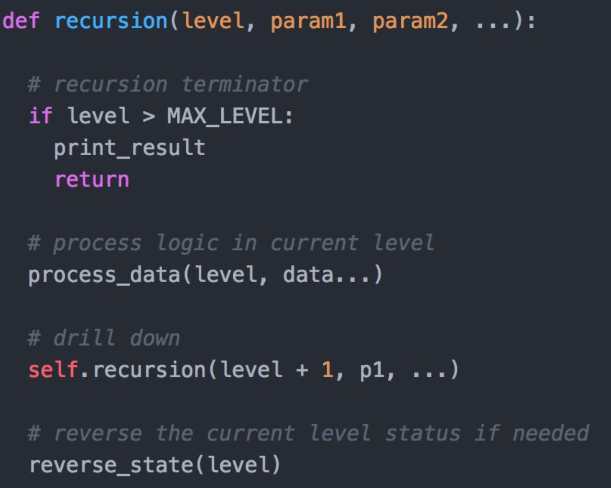

一. 线性表 #
数组 #
Top K问题 : 数组中最小的 k 个数 #
方法一： 堆， 时间复杂度 O(n log k) 方法二： 快排变形， （平均）时间复杂度 O(n)
数组的两分搜索 #
合并有序数组 [简单] #
- 方法一：直接合并后排序
- 方法二：双指针
- 方法三：逆向双指针
Leetcode 283. 移动零 #
链表 #
单链表的反转 [简单] #
- 使用3个指针遍历单链表，逐个链接点进行反转。 复杂
- 从第2个节点到第N个节点，依次逐节点插入到第1个节点(head节点)之后，最后将第一个节点挪到新表的表尾。 容易理解
public static Node reverseList(Node node) {
Node pre = null;
Node next = null;
while (node != null) {
next = node.next;
node.next = pre;
pre = node;
node = next;
}
return pre;
}
剑指 题16 理解单链表的反转(java实现) LeetCode206：反转链表
合并两个有序链表 [简单] #
public class ListNode {
int val;
ListNode next;
ListNode(int x) { val = x; }
}
class Solution {
public ListNode mergeTwoLists(ListNode l1, ListNode l2) {
ListNode dummyHead = new ListNode(0);
ListNode lastNode = dummyHead;
while (l1 != null && l2 != null) {
if (l1.val < l2.val) {
lastNode.next = l1;
l1 = l1.next;
} else {
lastNode.next = l2;
l2 = l2.next;
}
lastNode = lastNode.next;
}
lastNode.next = l1 != null ? l1 : l2;
return dummyHead.next;
}
}
快指针，慢指针 #
-
链表中环的检测
- 硬解
- 每走一步，把节点的地址存在set中，走下一步的时候查找地址是否已经在set中
- 快指针是慢指针的两倍， 最后快指针和慢指针相遇
-
链表倒数第k个结点
剑指 题15 题解： 快指针先于慢指针走若干步
-
删除链表倒数第n个结点 [中等] LeetCode 19
-
求链表的中间结点 -> 快指针是慢指针的两倍 LeetCode 例题精讲 | 05 双指针×链表问题：快慢指针
在O(1)时间删除链表结点 #
剑指Offer
- 最常规的做法是从链表的头结点开始，顺序遍历查找要删除的结点，并在链表中删除该结点。 这种思路由于需要顺序查找，时间复杂度自然就是O(n)。
- 然而，可以把下一个结点的内容复制到需要删除的结点上覆盖原有的内容，再把下一个结点删除， 就相当于把当前需要删除的结点删除了，这样的时间复杂度是O（1）。
两数相加 : 合并两个链表中的数，并返回一个新的链表 #
Leetcode 2.两数相加 Leetcode 2.两数相加
栈,队列 #
两个栈实现一个队列 [简单] #
剑指 7题，指南 P5 Leetcode 232
用队列实现栈 #
包含min函数的栈 [简单] #
剑指 21题 , 指南 P1 Leetcode 155 题解：方法一：辅助栈
有效的括号[简单] #
Leetcode 20 题解：辅助栈
用数组来实现栈 #
二. HashTable 哈希表 #
两数之和 #
Leetcode 1 a + b = 9 a; b= 9 -a => Set(查询) ; O(n)
三数之和 #
Leetcode 15 a, b -> 2 loop; c = -(a+b) -> Set(查询); O(n^2)
三. 二叉树 #
中序遍历 非递归算法 #
指南 P88 LeetCode 94：二叉树的中序遍历 在迭代的时候需要显式地将这个栈模拟出来
公共祖先 #
剑指 50题 ，指南 P153 参考17 LeetCode 235,236. 递归，非递归
二叉树的最大距离（即相距最远的两个叶子节点）。 #
二叉树中和为某一值的路径 #
剑指 25题 LeetCode 112: 路径总和. 用栈来存路径
LeetCode 102 二叉树的层序遍历 #
参考 19 LeetCode 102 LeetCode102 解1： BFS 队列辅助 解2： DFS
LeetCode 104 二叉树的最小/最大深度， 二叉树的深度 #
剑指 39题 ， 递归的方法 LeetCode 104
BFS： 第一个达到的叶子节点是最小深度， 最后一个达到的叶子节点是最大深度。 DFS递归。
四. 字符串 #
一个字符串中， 要找到其中最长的字符串，并且没有重复字符。 #
字符串转换为整数 #
剑指 50题 leetcode 8 leetcode 8
字符串中第一个只出现一次的字符，如何优化算法使得遍历次数更少 #
剑指 35题
KMP子串查找算法 #
Leetcode 415. 字符串相加: 字符串表示的数字相加 #
Leetcode 344. 反转字符串 #
Leetcode 205. 同构字符串 #
五. 其他 #
最小响应时间的算法 #
有的task 执行时间长，有的task 执行时间短， 如何设计一个负载均衡策略
- QPS比Nginx提升60%，阿里Tengine负载均衡算法揭秘
- 超级负载均衡 来源于以前百度的blog
- [极客时间 - 程序员的数据基础课 19,20,21] 基于概率 响应时间短的概率越大， 响应时间是正态分布的
- nginx fair负载均衡算法 按后端服务器的响应时间来分配请求，响应时间短的优先分配。
某一个id访问了系统多次，怎么做限流 #
参考12 : leecode 239 Array + sliding window maximum 解： + 优先级队列 大顶堆 O(n * logk) + queue deque O(n*1)
递归模板 recursion #

求众数 #
LeetCode第169号问题：求众数 LeetCode 169. Majority Element 剑指 29题， 参考18 解1： map O(N) 解2：sort O（n logn） 解3: 摩尔投票法 特殊高效算法
LRU cache #
Leetcode 146. LRU 缓存 参考20 双向链表实现 Redis内存淘汰机制 allkeys-lru Cache replacement policies 简单LRU算法实现缓存
布隆过滤器 #
+有误判率 +难以删除 应用： Guava Bloomfilter Mapredue bloomfilter Google Guava之BloomFilter源码分析及基于Redis的重构
如何在海量数据中判断某个数据是否存在 #
布隆过滤器
面试题 16.26. 计算器 #
Leetcode 面试题 16.26. 计算器 用Stack来实现
六. 动态规划 #
参考: #
- 数据结构与算法之美 - 07链表（下）：如何轻松写出正确的链表代码？ 王争
- 面试精选：链表问题集锦 good
- 《剑指 offer》
- 《程序员代码面试指南》
- LVS集群之十种调度算法及负载均衡——理论
算法面试通关40讲 覃超
算法面试通关40讲 覃超
git #
- https://github.com/wangzheng0822/algo 王争
- https://github.com/www6v/leetcode-2 作者出版了算法书
- https://github.com/www6v/algorithm star 100K
https://labuladong.github.io/algo/ labuladong 的算法网站